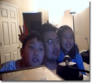

Kiduk Yang
|  | I am an associate professor in the Library and Information Science Department in Kyungpook National University. I moved to Korea in 2010 from the School of Library and Information Science (SLIS) at Indiana University, Bloomington. My research area is Information Retrieval with emphasis on leveraging human knowledge for information discovery on the Web. |
My research interest from broad to narrow are as follows
Investigate various ways to apply information technology (IT) to enhance, facilitate, and enrich information processing, management, and transfer. Devise a dynamic information retrieval (IR) system that learns from user interactions and adapt its strategies to accommodate the information needs of individual users. Explore methods of combining different retrieval approaches, sources of evidences (text, hyperlinks, classification structures, user statistics), and interactions (user-system, system-data) to enhance information discovery on the Web.
Guided by the belief that the whole can be greater than some of its parts, I have been exploring various ways to combine multiple sources of evidence and multiple approaches to information discovery. At Indiana University, I envisioned and established a collaborative research laboratory and platform called Web Information Discovery Integrated Tool (WIDIT), which I brought over to Keimyung University.
WIDIT adopts a fusion approach to information retrieval and knowledge discovery with the aim to combine the capabilities of the human and the machine as well as to integrate multiple methods and sources of evidence. The WIDIT server houses a modular system with a suite of tools that can be put together to conduct various IR experiments. WIDIT research includes TREC project that examines cutting-edge information retrieval strategies for accommodating a variety of data environments and search tasks, Classification-based Search and Knowledge Discovery (CSKD) project that investigates the integration of information retrieval and knowledge organization approaches, Virtual Collection Builder (VCoB) project that explores an interactive and adaptive mechanism for harvesting, organizing, and maintaining a personalized collection of high-quality digital resources, and CiteSearch project for developing a multi-faceted fusion approach to information quality assessment that employs a range of citation-based methods to analyze data from multiple sources.
Guided by the belief that the whole can be greater than some of its parts, I have been exploring various ways to combine multiple sources of evidence and multiple approaches to information discovery. At Indiana University, I envisioned and established a collaborative research laboratory and platform called Web Information Discovery Integrated Tool (WIDIT), which I brought over to Keimyung University.
WIDIT adopts a fusion approach to information retrieval and knowledge discovery with the aim to combine the capabilities of the human and the machine as well as to integrate multiple methods and sources of evidence. The WIDIT server houses a modular system with a suite of tools that can be put together to conduct various IR experiments. WIDIT research includes TREC project that examines cutting-edge information retrieval strategies for accommodating a variety of data environments and search tasks, Classification-based Search and Knowledge Discovery (CSKD) project that investigates the integration of information retrieval and knowledge organization approaches, Virtual Collection Builder (VCoB) project that explores an interactive and adaptive mechanism for harvesting, organizing, and maintaining a personalized collection of high-quality digital resources, and CiteSearch project for developing a multi-faceted fusion approach to information quality assessment that employs a range of citation-based methods to analyze data from multiple sources.
My research is driven by the vision of IR that involves a research infrastructure, such as WIDIT, with an experimental system at its core and a cohort of researchers from various disciplinary backgrounds who collaborate to investigate key IR questions piece by piece and in concert. An important component of this vision is “trial by fire,†where methodologies are validated in a standardized environment such as the Text REtrieval Conference (TREC) before being deployed in operational systems. I have been a TREC participant since 1997, where WIDIT system consistently placed in top ranks in recent years.
As new breakthroughs occur, the job markets change, which in turn change the educational demands and needs. As a teacher, I strive to establish and maintain a curriculum that can help students learn to apply today’s information technology to solve real world problems while developing a broad and forward-looking perspective of Information and Library Science.
I strongly believe in the integration of teaching, research, and application. Such integration can serve as a mechanism to maintain intellectual vitality as well as a conduit to accelerate the pace of advances in information science and technology. I also feel that closer linkage between academic community and the industry would be to their mutual benefit. Consequently, I am always on the lookout for ways to bring together learning, research, and industry which can create many exciting opportunities for creativity, innovation, and collaboration.
As new breakthroughs occur, the job markets change, which in turn change the educational demands and needs. As a teacher, I strive to establish and maintain a curriculum that can help students learn to apply today’s information technology to solve real world problems while developing a broad and forward-looking perspective of Information and Library Science.
I strongly believe in the integration of teaching, research, and application. Such integration can serve as a mechanism to maintain intellectual vitality as well as a conduit to accelerate the pace of advances in information science and technology. I also feel that closer linkage between academic community and the industry would be to their mutual benefit. Consequently, I am always on the lookout for ways to bring together learning, research, and industry which can create many exciting opportunities for creativity, innovation, and collaboration.
Page Last Updated: October 1, 2010